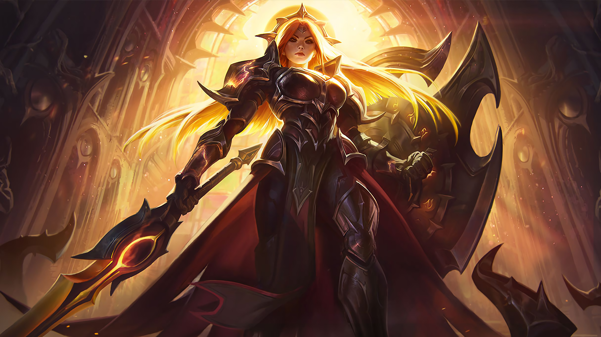

Support Champion
Leona

Youtuber
Champion Review ⬇️
Imbued with the fire of the sun, Leona is a holy warrior of the Solari who defends Mount Targon with her Zenith Blade and the Shield of Daybreak. Her skin shimmers with starfire while
her eyes burn with the power of the celestial Aspect within her. Armored in gold and bearing a terrible burden of ancient knowledge, Leona brings enlightenment to some, death to others.
Click To Full Biography
Abilities
Passive -- Leona's abilities mark enemies hit with Sunlight for 1.5 seconds. Subsequent applications of Sunlight will refresh its duration.
Damage dealt to marked enemies by allied Champion champions (excluding Leona) consumes Sunlight to deal 25 − 144 (based on level) bonus magic damage.
-
Q -- Leona illuminates her shield, causing her next basic attack within 6 seconds to have a 0.25-second cast time, gain Range 50 bonus range, deal bonus magic damage and
Stun stun the target for 1 second.
-
W -- Leona radiates a solar eclipse around herself for 3 seconds, gaining Armor bonus armor and Magic resistance bonus magic resistance and taking
Damage reduction reduced damage from every instance of damage, up to a maximum of 50% reduction.
The eclipse then detonates after the duration, dealing magic damage to all nearby enemies and granting Leona Eclipse's damage reduction and bonus
resistances for an additional 3 seconds if she hits an enemy.
E -- Leona projects a solar image of her sword in the target direction, dealing magic damage to all enemies hit.
If she hits at least one enemy champion, she will dash 225 units behind the last one struck within 3000 range and Root root them for 0.5 seconds.
Leona is unable to move or attack while Zenith Blade is in flight.
R -- Leona calls down a beam of solar energy which strikes upon the target location after 0.625 seconds, granting Sight sight of the area before impact and for another 3 seconds afterwards.
Enemies within the area are dealt magic damage upon impact.
Enemies struck are Slow slowed by 80% for 1.5 seconds, and are also Stun stunned for the same duration if they are hit by the epicenter.
11.12.2021